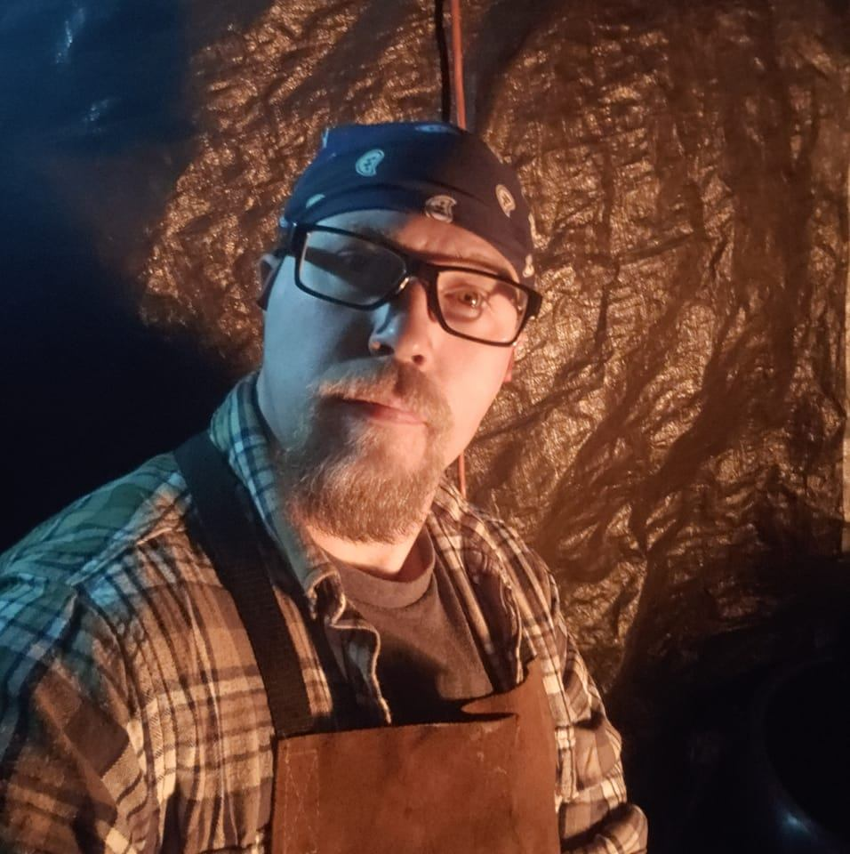

Josh finds fulfillment in crafting practical household items, valuing their everyday usefulness over aesthetics. His typical day in the forge follows a steady routine of preparation, from tending the fire to deciding on projects, with each stage of blacksmithing, from shaping hot steel to refining details, bringing satisfaction and occasional challenges, especially when experimenting with techniques like knife making. Diagnosed with Asperger’s Syndrome, he approaches his craft with intense focus and careful research, finding the repetition grounding and the attention to detail natural. Through blacksmithing, Josh has cultivated patience, a deeper appreciation for handmade metalwork, and hopes to continue improving and eventually sell more of his creations.
Josh spends a lot of his free time in his forge crafting items. He likes to focus on useful and decorative items.
View ProjectsThere are many places where Josh can get inspiration from. TikTok and other Social Media Creators are a big source of inspiration, though many can glaze over the "boring" aspect of smithing.
View ResourcesJosh was diagnosed with Asberger's, which is now recognized as Level 1 Autism. This is seen by many as a "dis"-ability, but to those who have it can embrace it as a "differ-"ability.
Learn More